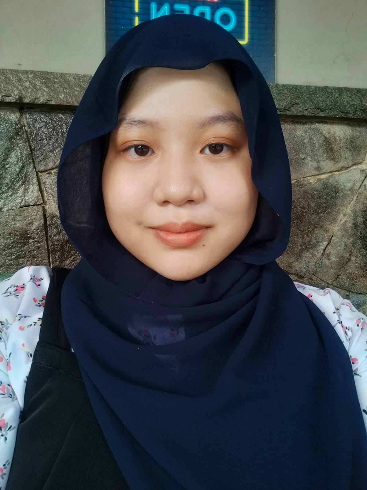

Halo Semuanya! Perkenalkan nama lengkap saya Nabilla Dian Azizah Widodo. Untuk nama panggilannya Nabilla. Saya berasal dari Jakarta. Kampus saya di Universitas Bina Sarana Informatika. Jurusan Sistem Informasi. Saya sedang menempuh semester 5. Hobi saya yaitu membaca, menonton film, bermain musik, dan menggambar. Alasan mengikuti program MSIB di Celerates adalah untuk menambah ilmu dan skill tentang UI dan UX, web dev, dan juga menambah relasi. Mengcoding adalah salah satu kelemahan saya, ini adalah html pertama saya yang saya dapat ilmunya dari Kakak Mentor di Celerates. Terima kasih banyak atas ilmu dasarnya dan saya menjadi penasaran untuk materi selanjutnya lalu akan bersemangat dan lebih giat belajar. Salam Kenal semuanya!
